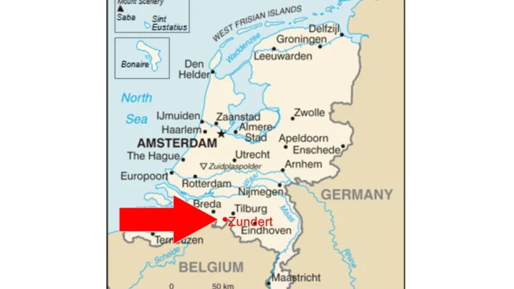

The Starry Night is a moderately abstract landscape painting (1889) of an expressive night sky over a small hillside village, one of Dutch artist Vincent van Goghs most celebrated works.
The oil-on-canvas painting is dominated by a night sky roiling with chromatic blue swirls, a glowing yellow crescent moon, and stars rendered as radiating orbs. One or two cypress trees, often described as flame-like, tower over the foreground to the left, their dark branches curling and swaying to the movement of the sky that they partly obscure. Amid all this animation, a structured village sits in the distance on the lower right of the canvas. Straight controlled lines make up the small cottages and the slender steeple of a church, which rises as a beacon against rolling blue hills. The glowing yellow squares of the houses suggest the welcoming lights of peaceful homes, creating a calm corner amid the paintings turbulence.
Van Gogh was born on March 30, 1853, in Groot-Zundert, Netherlands.
Van Gogh's father, Theodorus van Gogh, was an austere country minister, and his mother, Anna Cornelia Carbentus, was a moody artist whose love of nature, drawing and watercolors was transferred to her son.
Father: Van Gogh's father, Theodorus van Gogh, was an austere country minister
Mother: Van Gogh's mother, Anna Cornelia Carbentus, was a moody artist whose love of nature, drawing and watercolors was transferred to her son
The eldest of six living children, van Gogh had two younger brothers (Theo, who worked as an art dealer and supported his older brother's art, and Cor) and three younger sisters (Anna, Elizabeth and Willemien). Van Gogh was born exactly one year after his parents' first son, also named Vincent, was stillborn. At a young age — with his name and birthdate already etched on his dead brother's headstone — van Gogh was melancholy.

Over the course of 10 years, van Gogh created more than 43 self-portraits as both paintings and
drawings. "I am looking for a deeper likeness than that obtained by a photographer," he wrote to his
sister.
Van Gogh's self-portraits are now displayed in museums around the world, including in
Washington, D.C., Paris, New York and Amsterdam.